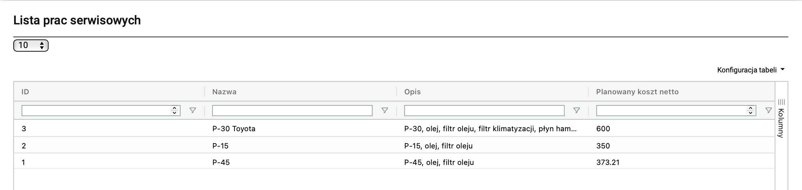

Serwisy
Zlecenia serwisowe - przeglądy, naprawy.
Lista szkod.
Zlecenia serwisowe
Zlecenia serwisowe tworzymy i wykonujemy, aby była historia całego pojazdu, od naprawy po przegląd techiczny. Zlecenia tworzy Rentis, Flotowiec lub koordynator, wiec warto zaglądać tutaj co jakiś czas, żeby sprawdzić czy przypadkiem coś nowego się nie pojawiło.
W przypadku koordynatorow najczęściej będziemy odwiedzać to miejsce w celu wykonania przeglądu techicznego, bez utworzenia zadania i zrealizowania go, auto nie będzie dostępne do wydania.
Tworzenie zadania serwisowego (przegląd techiczny jako przykład):
- Typ zlecenia serwisowego -> określamy tutaj co będzie wykonywane w serwisie.
- Typ finansowania -> z czego będzie pokryty koszt usługi. W przypadku przeglądu własne środki.
- Generowanie zadań -> jeśli wybierzemy tą opcje, zadania podstawienia i odbioru pojazdu automatycznie wygenerują się będziemy mogli przypisać je kierowcy. Jeśli kierowca wykona zadania auto automatycznie zmieni swoj stan na aktualny po odbiorze z serwisu. W innym wypadku będzie trzeba ręcznie zakończyć zadanie w widoku tabeli zleceń serwiswoych.
- Wybierz samochod -> ktorego auta dotyczy zlecenie.
- Wybierz polise -> ładuję się samoczynnie po wybraniu auta.
- Wybierz warsztat -> wskazujemy, w ktorym miejscu będzie wykonywana czynność serwisowa.
- Stan pojazdu po serwisie -> jeśli wybierzemy w ekslopatacji to po ukończeniu zadań przez agenta auto wraca automatycznie do dyspozycji.
- Uwagi -> opisujemy co będzie wykonywane w serwisie np. P-30, czyli przegląd techniczny 30k km.
Resztę informacji uzupełnia Rentis po otrzymaniu FV.
{kind=link}
Prace serwisowe
W tym miejscu mamy predefiniowane prace serwisowe, ktore można przypisać w zleceniach serwisowych, ale jak to nie wiem jeszcze. Prawdopodobnie brak nam uprawnień do takich czarow.
{kind=link}
Szkody
Bardzo ważny moduł dla koordynatorow. Miejsce, w ktorym mamy spis wszystkich dodanych przez agentow szkod. Warto skonfigurować tabele pod swoj oddział i regularnie, a najlepiej codziennie sprawdzac nowe uszkodzenia.
Kolumna źrodło określa kiedy powstała szkoda:
- Kliencka -> szkoda została stwierdzona przy odbiorze pojazdu.
- Pracownicza -> szkoda została stwierdzona przy podejmowaniu auta lub odstawianiu go do bazy.
W szczegolach szkody mamy zawartą dokumentację:
- zdjęciową,
- pozycje uszkodzenia
- ID rezerwacji, jeśli jest to szkoda kliencka
- dane zdarzenia, takie jak dane sprawcy, miejsce kolizji
- druk szkodowy jeśli został wypełniony i odpis prawa jazdy
Do danej szkody możemy automatycznie wygenerować zlecenie serwisowe za pomocą przycisku dodaj zlecenie serwise. Z widoku tabeli możemy zadecydować o szkodzie za pomocą trzech opcji: nie wymaga naprawy, wymaga naprawy i naprawa na miejscu.
Jeśli brakuje nam dokumentacji możemy ręcznie wygenerować protokoł do każdej szkody za pomocą wygeneruj protokoł szkody, wypełniamy go zgodnie ze stanem faktycznym.
Warsztaty
Zbior warsztatow, z ktorych korzystamy. Jeśli korzystamy z warsztatu, a nie ma go na liście, śmiało w tym miejscu możemy go dodać.
{kind=link}